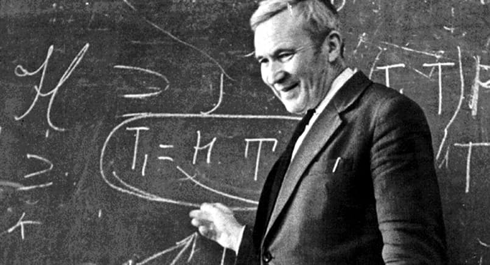

Fundamentals of Probability
The probability triple and Kolmogorov’s breakthrough
A well-rounded decision scientist should be fluent in the language of probability and statistics, easily go back and forth between a real-world problem and mathematical abstraction.1 Think how important is logic for maths, computer science, and philosophy. Similarly, probability theory is a formal language, the logic of uncertainty.
1 In order to build adequate models of economic and other complex phenomena, we have to take into account their inherent stochastic nature.
Even though I emphasize the importance of studying through stories and simulations, there is one mathematical and quite abstract topic we can’t afford to avoid. Formally, at the core of probability theory is the triple \((\Omega, \mathcal{F}, \mathbb{P})\) and we have to thank Andrey Kolmogorov for developing a solid axiomatic foundation. All the modern probability machinery we’re using in practice is build on top of that.
 Andrey Kolmogorov’s (1933) contribution culminates the work started by Laplace, Gauss, Poincare, and many others. You can check out the short stories of important historical figures here
Speaking more bluntly, without being aware of the relevance and importance of the probability triple, no amount of stories will make us truly understand it. The reason for writing this chapter is that many students don’t know formally what a random variable and probability is. This leads to many mistakes in understanding and thus, in practice.
Probability can be studied at different levels of rigor and mathematical abstraction. Most commonly it’s a mix of intuition and calculus-based approaches, but some courses do it with heavier mathematical analysis (a la Shiryaev) or even measure theory (the final boss).2
How far you go back into the abstract foundations? For practical intents and purposes, you won’t need measure theory and proof-based mathematical analysis. Except if you go into quantitative finance or statistical research.
I find those interesting for their own sake and I’m curious about the deep foundations of higher-level tools we use. However, I can’t argue it’s an efficient use of your time – you’re proabably better off by studying other things like programming, statistical modeling, causal inference, and machine learning.
2 In many top programs in Europe, you will have to study it at the highest levels of rigor. Keep this in mind if you want to pursue a quantitative masters’ degree
One of the tasks of probability theory is the construction of the probability triple with the tools of mathematical analysis (and measure theory). We will not go through this process of construction, but I will explain conceptually what each element is and why is it important.
The probability triple
We have to start with the notion of a random experiment (\(\mathscr{E}\)). For example, a survey on voting intention, customer responses about their preferred product out of a selection, acidity of brewed beer in a factory. Think of it as a well-defined procedure that produces an outcome which we can observe, with the following properties:
- Possible results and outcomes are known apriori and exhaustably. For example: a coin/dice toss, quantity of laptops sold, time spent watching youtube, a borrower’s default on the loan, a choice between subscription options.
- We don’t known for sure which result of \(\mathscr{E}\) will manifest or appear before we run the experiment. Otherwise, it wouldn’t be random.
- Despite that, there is a perceptible regularity, which can be eventually measured and quantified, that is, encoding the idea of a probabilistic “law” in the results. That regularity could be a result of the large scale of the phenomena, for example, a small but systematic preference for flashy video thumbnails on youtube.
- Repeatability of the conditions in which the experiment runs, like the comparability and perservation of context. This is optional in the Bayesian perspective, where we’re not thinking in long-run frequency terms.3
3 Note that Bayesian vs frequentist is a debate over the interpretation of probability. All of its constructions and facts are the same in both approaches
4 In practice, it’s always a good idea to define what is the range of valid and allowed values that your variable or measuremet can take (scales)
An elementary event is one of the possible results of \(\mathscr{E}\), usually denoted by \(\omega_i \in \Omega\), where \(\Omega = \{ \omega_1, \omega_2, \dots \}\) is called a sample space or universal set – which suggest the idea of all outcomes being listed apriori and exhaustively.4
Frequentist vs bayesian interpretation
First, let’s address the context in which the repeatable conditions requirement makes total sense (spoiler - it’s physics and coin flips). Think of measurements taken from the Large Hadron Collider experiments – the volume, noise, and complexity of data. Ultimately, we want to make inferences about the underlying, physical processes which govern the behavior and interaction of particles. The hypothesis tests based on the complicated models, despite their high confidence, are ultimately a probabilistic statement about how surprising is the data. Therefore, the long-run action of acting as if the null hypothesis is false, assumes that the experiment is reapeatable.5
5 Practically speaking, we want to replicate the experiment multiple times in order to make sure it was not a fluke
In the frequentist perspective, the probability of an event is intrinsic to it’s nature, i.e. objective and is the limiting frequency with which that outcome appears in a long series of events. We can think of this convergence of frequency as a “statistical stability”, which can be supported only by a large number of trials, i.e. empirical evidence. This applies really well in gambling (by design) and physics, but is it plausible in human behavior? I don’t know, but it might be unreasonably effective at a large scale even if not true.
Formally, we can represent this statement by Bernoulli’s theorem, where \(m_n\) is the number of times an event \(A\) occurs in \(n\) trials. \[ \lim_{n \to \infty} \frac{m_n}{n} = p \]
Bayesians view probability as the degree of confidence in a belief. An apriori (subjective) knowledge, before seeing the data, will be updated iteratively with every new piece of evidence via inverse probability (Bayes rule). The fact that we need to define and ellicit our prior beliefs is not necessarily a weakness, especially in social science – if done correctly and rigorously, it can improve our inferences. If we have tons of data, our prior choice, if not too dogmatic or vague, will not matter.
Events and their spaces
Elementary events are rarely the events of interest to us. An event \(A\) is an union of elementary events: \(A = \bigcup\limits_{i = 1}^n \omega_i\). We care not only about its realization, but also about other events, because they might contribute with additional information (about the probability) of our event of interest.6 This means that in one way or other, we need to conceptualize a space of all* possible events, which are subsets of \(\Omega\). However, this is where the big (theoretical) trouble begins, because the event space has to have certain properties in order for the events to be measurable (so we can assign a probability which makes sense).
6 This hints at the idea of conditioning, which is the “soul of statistics”
A set of subsets \(\mathcal{F} \subset 2^\Omega\) is an algebra (field) if the following holds:
- \(\Omega \in \mathcal{F}\) and \(\varnothing \in \mathcal{F}\)
- If \(A \in \mathcal{F}\) then \(A^C \in \mathcal{F}\) (closed under complements)
- If \(A, B \in \mathcal{F}\) then \(A \cup B \in \mathcal{F}\) (closed under union). Note that 2 and 3 imply that it’s closed under countable intersection
The additional condition for sigma-algebra is that \(\mathcal{F}\) should be closed under countable union. Sigma here refers to countability and additivity.
If \(\{ A_i \}_{i \ge 1} \in \mathcal{F}\) then \(\bigcup\limits_{i \ge 1} A_i \in \mathcal{F}\)

{kind=link}
7 If you wonder how in the world one can reason about the probability in a phylogenetic tree – this is where rigorous, measure-theoretic probability comes to rescue
The event space \(\mathcal{F}\) is a sigma-algebra. For technical reasons which measure theory deals with, we usually can’t define a probability measure on all sets of subsets \(2^\Omega\). Remembe that we don’t work only with discrete or countable outcomes. Besides \(\mathbb{R}\), we can encounter wonky outcomes like simplexes, functions, trees, graphs, etc.7
On an intuitive note, we define the probability measure on sigma-algebras because if those conditions do not hold, the (probability) measure wouldn’t make sense, as unions of events would step out of the bounds of event space. The consequence of this is that important results in probability theory which are necessary for most statistical methods will not hold (fully).
We finally have the minimal tools to define the triple \((\Omega, \mathcal{F}, \mathbb{P})\). You can think of probability as an extension of measure, where we’re not concerned with lengths and volumes, but with chances of events realizing. Basically, we’re assigning a value between zero and one to elementary events \(\mathbb{P}(\omega_i)\). This is why additivity properties are key, as we care about random events \(A\), not only \(\omega_i\).
Suppose we have defined a measurable space \((\Omega, \mathcal{F})\), where \(\mathcal{F}\) is a sigma-algebra. A probability measure is the function \(\mathbb{P}:\mathcal{F} \rightarrow [0, 1]\) such that:
- \(\mathbb{P}(\Omega) = 1\)
- For countable sequences of mutually disjoint effects, i.e. \(\forall \{ A_i \}_{i \ge 1}\) where \(A_i \bigcap\limits_{i \ne j} A_j = \varnothing\), the following holds \(\mathbb{P}(\bigcup\limits_{i \ge 1} A_i) = \sum\limits_{i \ge 1} \mathbb{P}(A_i)\)
Probability triple \((\Omega, \mathcal{F}, \mathbb{P})\) is the fundamental object the whole probability theory is constructed upon. Kolmogorov took the informal, gambling-type probability and put it onto axiomatic foundations – which enabled future breakthroughs.
Notice that this definition of probability is not the naive one, of number of successes over the total possible numbers an event could arise. You are allowed to use naive probability only in very special cases of discrete and finite sample space, where all elementary events are independent and equally likely. Otherwise and by default, carefully think about each element in the probability triple.
The reasons for this are very technical, and the concept of a sigma-algebra is essential in resolving the resulting paradoxes. If you’re interested in these technical details, you can check out my relatively accessible introduction to measure theory and the Caratheodori extension theorem.
Even though you can go a long way as a practitioner with standard tools in probability theory, deeply understanding its measure-theoretic foundations could open up a whole new world to the researcher. It’s easy to take the results from statistics and probability for granted, but it’s useful to be aware what hides beneath the surface.
Evans Lawrence gives the following example of a function which is neither discrete nor continuous, for which you flip a coin and if it comes heads, draw from an uniform distribution and in case of tails a unit mass at one. If \(\chi_{[0,1]}(x) = (e^{ix} - 1)/ix\) is the characteristic function of the interval from zero to one, in a way you can formulate its density, but usually it’s not the case, nor is it very helpful to think about it in such terms.
\[\begin{equation} p(x) = w_1 \chi_{[0,1]}(x) + w_2\delta_1(x) \end{equation}\]
Even though you can visualize this in two dimensions as the uniform and a spike, or as a CDF with a discontinuity, this approach just breaks down in higher dimensions or more complicated combinations of functions.
Jeffrey Rosenthal begins his book by a similar motivation, constructing the following random variable as a coin toss between a discrete \(X \sim Pois(\lambda)\) and continuous \(Y \sim \mathcal{N}(0,1)\) r.v.
\[\begin{equation} Z = \begin{cases} X, p = 0.5 \\ Y, p = 0.5 \end{cases} \end{equation}\]
He then challenges the readers to come up with the expected value \(\mathbb{E}[Z^2]\) and asks on what is it defined? It is indeed a hard question.
Thank you for bearing with me through the theory you have probably seen before, but we’re not done. We’re still in the land of set theory, and it is very hard to operate that way in practice – so, we need a new concept which will allow us to use the tools of mathematical analysis in probability, in order to make it feasible for practical uses.
Random Variables
We take the idea of random variable and probability density functions for granted, but at some point it was a huge breakthrough. It is a necessary abstraction in order to mathematically define the quantifiable characteristics of the outcomes of interest. Meaning, we start working with numbers instead of some qualitative properties.8
8 Remember that we’re studying an interdisciplinary, quantitative field
A random variable is quantificator of elementary events, a function defined on the outcome space which maps the elementary events to the real number line. That mapping can’t be done in any way we wish, it has to perserve the informational structure of the sample space. That is one of the technical reasons for sigma-algebras we mentioned before and is related to the idea of measurability, meaning we can assign a meaningful “volume”.
\[\begin{align} X(\omega):\Omega \rightarrow \mathbb{R} \\ s.t. ~~ \{\omega \in \Omega | X(\omega) \leq r, \forall r \in \mathbb{R} \} \in \mathcal{F} \end{align}\]
Let’s figure out what the hell do we mean by that fine print condition, using the diagram below. The idea of conservation of the informational structure is actually equivalent to the one of measurablility. If this property doesn’t hold, it’s not possible to explicitly and uniquely refer to the sets (events) of interest.

The idea is that the preimage defined above \(X^{-1}((-\infty,r]) = E \in \mathcal{F}\) on the following interval corresponds to an event E which should be in the event space \(\mathcal{F}\). Because the only thing that varies is the limit of the interval r, the “randomness” comes from it. Also, it automatically suggests the idea of the Cumulative Distribution Function, which is \(F_X(X \le r)\).
The repartition or CDF – one of the most important constructs in probability is a direct consequence of the definition of the random variable.9
9 Later in the course, we will see how ECDF (empirical cumulative distribution function) is an useful tool in data analysis and simulation
\[ P(A ≤ r) = F_X(X ≤ r) \]
In the practice of modeling, we often work with probability density functions, because it is more convenient in many cases. Then, in order to translate to probabilities, we would think in terms of areas under that curve. For sure, you remember the following duality between CDF and PDF (distribution, probability density function): \(F'(x) = p(x)\).
Wonky probability triples
As a motivation of why do we have to understand all of this, when for most practical applications we can get by just fine with using the results and tools from probability, I will introduce two examples: one of compositional data analysis10 and time series analysis. What I want to say, is that for more “exotic” applications, we might need to tweak that probability triple because of the nature of the problem, which has downstream consequences for all the statistical machinery we use in those applications.

Sometimes, the data doesn’t “live” in our normal, intuitive, euclidian space \(\mathbb{R}^n\). There are cases when the object of our analysis are proportions or compositions: think of what a material is made of, the proportion of the demand for different sizes of a shoe or garment.
We don’t necessarily care about their absolute value, but about their relative proportion. If we blindly apply traditional methods, or even statistical summaries, we will quickly hit weird results and paradoxes. So, we have to tweak existing methods such that they make sense for compositions.
Compositional data analysis solves those issues by defining a probability triple over the simplex (instead of \(\mathbb{R}^n\)): \((\mathcal{S}^n, \mathcal{F}, \mathbb{P})\). This leads to a different definition of the event space \(\mathcal{F}\), which is also a sigma-algebra and a different definition of the probability measure \(\mathbb{P}\).
For the next example, you don’t have to understand what Gaussian Processes are or are used for.11 However, later in the course, we will discuss nonparametric methods for hypothesis testing. Their usefulness comes from the fact that we make less distributional assumptions about our population, therefore getting more robust results.
11 Modeling complex patterns in (multidimensional) time series, for spatio-temporal modeling, any time our data points are not independent and we can quantify their “closeness”
It’s not that these methods don’t have parameters, but the “parametrization” varies depending on how much data we have, which makes them very flexible in a wide variety of applications, where we just don’t know what is a reasonable distribution or parametric functional form for the relationship that we model.
If we’re thinking about a regression from the nonparametric perspective: that is, over a set of abstract, smooth, twice differentiable functions: \(f(x) \in \mathscr{C}^2, f : X \rightarrow \mathbb{R}\), we might want to know how a draw of samples from an infinite set of functions might look like.
\[ f(x) \sim GP(\mu(x); K(x,x')) \]
The questions arises: how to define a PDF (probability density function) in this space? In my bachelor thesis, I got away with using Gaussian Processes by informally defining an apriori distribution of the mean vector \(\mu\) and a Kernel (covariance function), then conditioning it on observed data with a Normal Likelihood.
\[ p(f(x) \, |\left \{ x\right \})=\frac{p(\left \{ x\right \}| \, f) \, \mathbf{p(f)}}{p(\left \{ x\right \})} \]

In the case of stochastic processes, we work with a sequence of random variables \(\{X_t, t \in T \}\) and start asking questions:
- What kind of time dependency is there? (autocorrelation)
- What is the long-run behavior?
- Can we say something about extreme events?
A lot of important applications in economics and finance are dynamic, so we have to work with time series very often. It gets worse when data is correlated not only in time, but also geographically – which is why the field of spatio-temporal data analysis is in such demand right now for policy-making.
Thus, a natural extension of this probability machinery we discussed so far is stochastic processes, underlying these dynamical systems. We can look at our time series as a manifestation, a particular instantiation of this latent process. Depending on which one we choose, we can model a wide range of phenomena.
Last, but not least, measure theory and advanced probability is important in machine learning theory, where we try to formally answer the question if our model can generalize successfully given its complexity, the sample size, and the “strength of signal”.12 Vapnik and Chernovenkis’ theory started a revolution in pattern recognition, gave a practical model of Support Vector Machines, and established the foundations of modern machine learning.
One such tool from probability which pops up in ML theory is uniform convergence, where “you consider the probability of a supremum over an infinite set of functions, but out of the box measure theory only allows for constructions with countably infinite index sets”. 13
In plain english, the object of investigation is an infinite of functions mapping from our input space (data, \(X\)) to the output / target variable \(y\). Therefore learning is an algorithmic process which uses our in-sample data to select a function from this infinite space, which will have the greatest chance to generalize and make good predictions.
13 You can check out this answer on quora for a more detailed explanation of how measure theory is useful in ML theory
12 Probably approximately correct (PAC learning)